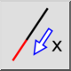

Forlenge / forkorte
Verktøylinje/ikon:


Meny: Endre > Forlenge / forkorte
Snarvei: L, E
Kommandoer: lengthen | shorten | trimamount | le
Dette er en automatisk oversettelse.
Verktøylinje/ikon:


Dette verktøyet kan brukes til å enten forlenge eller forkorte linjer eller buer med en gitt verdi.
import LengthenFigure from './LengthenFigure.png';
alternativer. En positiv verdi forlenger objektet, mens en negativ verdi forkorter det. F.eks. vil en verdi på «5» forlenge det valgte objektet med 5 enheter.
enden du vil endre.